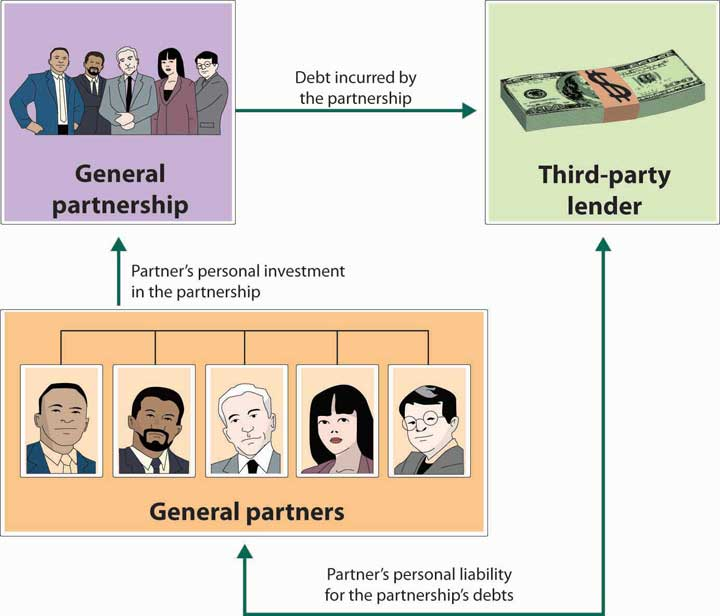

A partnership (or general partnership)Business owned jointly by two or more people. is a business owned jointly by two or more people. About 10 percent of U.S. businesses are partnerships,“Number of Tax Returns, Receipts, and Net Income by Type of Business,” The 2012 Statistical Abstract: The National Data Book, January 30, 2011, http://www.census.gov/compendia/statab/cats/business_enterprise/sole_proprietorships_partnerships_corporations.html (accessed January 27, 2012). and though the vast majority are small, some are quite large. For example, the big four public accounting firms are partnerships. Setting up a partnership is more complex than setting up a sole proprietorship, but it’s still relatively easy and inexpensive. The cost varies according to size and complexity. It’s possible to form a simple partnership without the help of a lawyer or an accountant, though it’s usually a good idea to get professional advice. Professionals can help you identify and resolve issues that may later create disputes among partners.
The impact of disputes can be lessened if the partners have executed a well-planned partnership agreement that specifies everyone’s rights and responsibilities. The agreement might provide such details as the following:
Figure 4.3 "General Partnership and Unlimited Liability" shows that a major problem with partnerships, as with sole proprietorships, is unlimited liability: each partner is personally liable not only for his or her own actions but also for the actions of all the partners. In a partnership, it may work according to the following scenario. Say that you’re a partner in a dry cleaning business. One day, you return from lunch to find your establishment on fire. You’re intercepted by your partner, who tells you that the fire started because he fell asleep while smoking. As you watch your livelihood go up in flames, your partner tells you something else: because he forgot to pay the bill, your fire insurance was canceled. When it’s all over, you estimate the loss to the building and everything inside at $1.2 million. And here’s the really bad news: if the business doesn’t have the cash or other assets to cover losses, you can be personally sued for the amount owed. In other words, any party who suffered a loss because of the fire can go after your personal assets.
Figure 4.3 General Partnership and Unlimited Liability
Many people are understandably reluctant to enter into partnerships because of unlimited liability. Individuals with substantial assets, for example, have a lot to lose if they get sued for a partnership obligation (and when people sue, they tend to start with the richest partner). To overcome this defect of partnerships, the law permits a limited partnershipPartnership made up of a single general partner (who runs the business and is responsible for its liabilities) and any number of limited partners., which has two types of partners: a single general partner who runs the business and is responsible for its liabilities, and any number of limited partners who have limited involvement in the business and whose losses are limited to the amount of their investment.
The partnership has several advantages over the sole proprietorship. First, it brings together a diverse group of talented individuals who share responsibility for running the business. Second, it makes financing easier: The business can draw on the financial resources of a number of individuals. The partners not only contribute funds to the business but can also use personal resources to secure bank loans. Finally, continuity needn’t be an issue because partners can agree legally to allow the partnership to survive if one or more partners die.
Still, there are some negatives. First, as discussed earlier, partners are subject to unlimited liability. Second, being a partner means that you have to share decision making, and many people aren’t comfortable with that situation. Not surprisingly, partners often have differences of opinion on how to run a business, and disagreements can escalate to the point of actual conflict; in fact, they can even jeopardize the continuance of the business. Third, in addition to sharing ideas, partners also share profits. This arrangement can work as long as all partners feel that they’re being rewarded according to their efforts and accomplishments, but that isn’t always the case.
While the partnership form of ownership is viewed negatively by some, it was particularly appealing to Ben Cohen and Jerry Greenfield. Starting their ice cream business as a partnership was inexpensive and let them combine their limited financial resources and use their diverse skills and talents. As friends they trusted each other and welcomed shared decision making and profit sharing. They were also not reluctant to be held personally liable for each other’s actions.
A partnership has several advantages over a sole proprietorship:
A partnership has several disadvantages over a sole proprietorship:
(AACSB) Analysis
Grand Canyon Helicopter Adventures was started five years ago by Jayden Collins. The business has grown over the years, but is at a standstill now. Jayden would like to expand his business, but needs additional funds to do this. Also, he could really use help running the business. Though he is an excellent pilot with a perfect safety record, he’s not very good at handling the day-to-day details needed to keep the business running smoothly. A friend of his, Rob Tocci, approached him recently and asked to join him in the business. Rob is fairly wealthy and has considerable business experience. Plus, he knows how to fly choppers—though he has had a few (thankfully nonfatal) mishaps. Jayden is a little apprehensive about sharing responsibility for running the business, but he doesn’t mind sharing profits. On the other hand, he recognizes that he alone will not be able to grow the business.
Because Jayden doesn’t want to incorporate, he has only two options: continue doing business as a sole proprietorship or find someone to join him in a partnership. You should evaluate these two alternatives, discuss the advantages and disadvantages of each option, and recommend the one you consider most appropriate. If you recommend forming a partnership, distinguish between a limited and a general partnership.